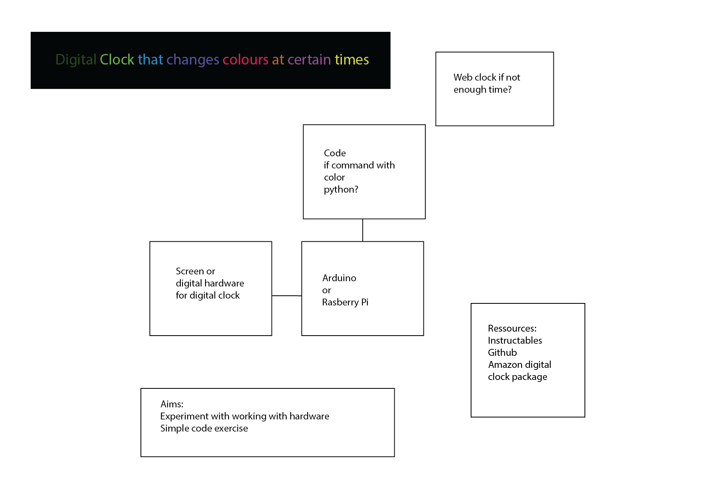
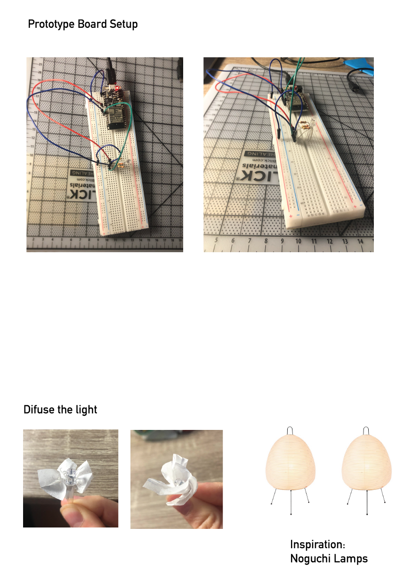
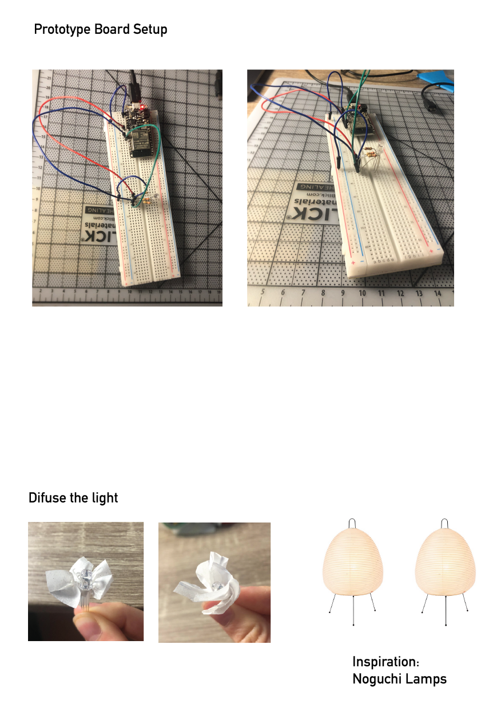
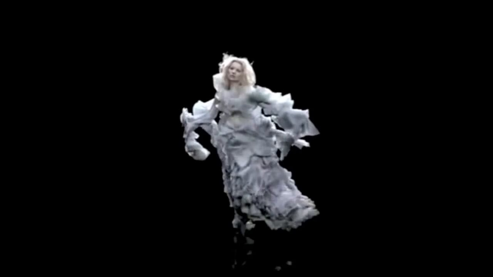
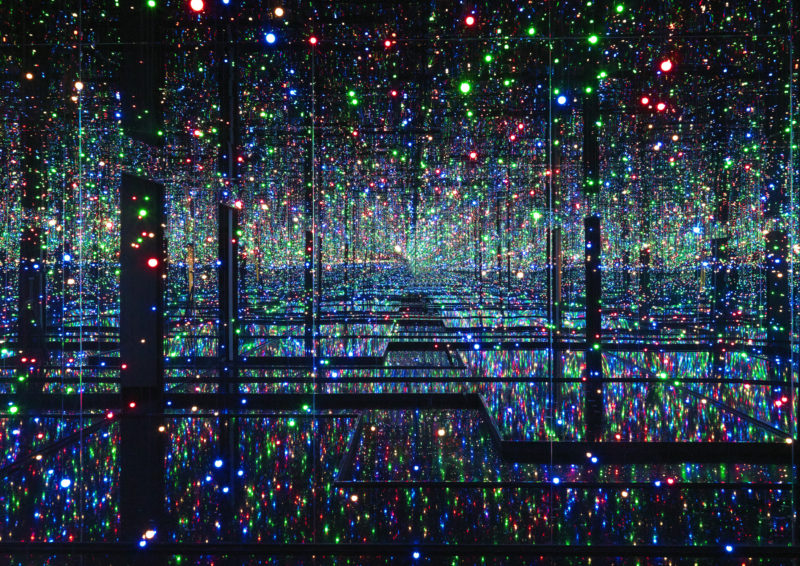
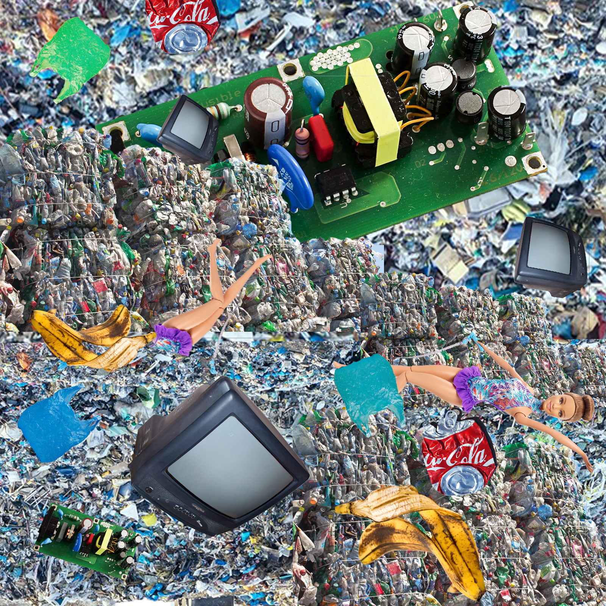

Week1
Creative tech tools
3Doodler Create+ Essentials 3D Printing Pen Set https://the3doodler.com/collections/create/products/create-essentials
3D Body Scaner https://www.styku.com
Poem generator https://www.poem-generator.org.uk/
Project examples
Yuri Suzuki https://yurisuzuki.com/artist/looks-like-music/
Georgia Lupi http://giorgialupi.com/whatcounts
Daft Punk //www.rollingstone.com/music/music-news/watch-daft-punks-legendary-2006-coachella-set-in-documentary-clip-225749/
Quotes + Analysis
“Arduino makes such work part of the development process, and the “push-back” of the physical electronics - the resistance of reality to our attempts to contain — it is therefore more present.” By using a physical object such as Arduino as opposed to software, this quote establishes that participants will create stronger bonds to the project. The participants are now doubly involved; through the analytical realm but also the physical realm. We generally tend to attach a higher sense of responsibility to physical things as we can visualise what we are responsible for.
“The ultimate goal of critical making experiences is not the evocative or pedagogical object intended to be experienced by others, but rather the creation of novel understandings by makers themselves” This shows that “critical making” does not assume a didactic position, it is instead a space for exploration that will lead to different forms of knowledge. Making is used as the process, the tool that allows this knowledge to emerge.
“Open design helps bring about a kind of socio-technical literacy that is necessary to reconnect materiality and morality” I like how this quote summarises the purpose of Open Design and how it attempts to address the disconnect we sometimes have with what we create and its implications. As we move to increasingly digital products it is easy to miss the links and distance ourselves from our creations as they become less tangible and we find ourselves needing to analyse novel scenarios we hadn’t previously encountered with physical products.
Week 2
Interactive Installations
The Clock by Christian Marclay https://www.youtube.com/watch?v=qKHmj83VC78
Audio Tooth Implant by Auger & Loizeau http://www.auger-loizeau.com/projects/toothimplant
Nike Rise interactive basketball court by AKQA https://www.akqa.com/work/nike/rise/
Quotes - "The Hacker Hacked" by Brett Scott
"By whistling the correct tone into a telephone handset, he could place free long-distance calls through a chink in the AT&T armour."
I like the poetics of this quote and how it eases you into the history of hacking. It illustrates the playfulness and curiosity that are at the heart of this activity. This metaphor also shows the idea of battling and challenging pre-existing systems.
"Hackers believe that essential lessons can be learned about systems -- about the world -- from taking things apart, seeing how they work, and using this knowledge to create new and even more interesting things."
I find interesting how designers have maybe appropriated this methodology. Thinking in terms of systems is an important skill when working on projects that deal with wicked problems in particular. This quote resonates with me and relates to my project called REWARE (how to be more in touch with your electronics). I followed this approach of deconstruction of electronic objects to better understand their circuits and systems, the hardware circuit and beyond.
"A hack stripped of anti-conventional intent is not a hack at all. It's just a piece of business innovation."
I find this to be insightful, as we are encouraged to gentrify provocative radical ideas, the center for growth (the never ending aim of capitalism) will be tied back to the field of business. This quote makes me consider how both may be valuable but have different aims. Is business inovation too strongly limited by its constraints?
Week 3
Quotes - "What do Prototypes Prototype?" by Houde and Hill
"Is a brick a prototype? That depends on how it is used."
I really like this examples because it shows our biases when it comes to the legitimacy we give to protoypes. I also like how the text shows the value of testing the weight and scale through the brick. The brick has few visual connotations to detract us from the two factors explored. I think if the object was already designed the appearance might make us consider scale and weight as minor.
"An interesting side-effect of this prototype was that its directness made it a powerful prop for promoting the project within the organization"
This quote points out to the importance of knowing one's audience as well as showing the influence of a high fidelity prototype. As most audiences are most responsive to the "look and feel" category/visual material, it is a great tool to leverage when promoting an idea.
" Implementation prototypes [...] commonly find their way directly into the final system. Two problems arise from this dynamic: firstly, programs developed mainly to demonstrate feasibility may turn out in the long term to be difficult to maintain and develop, and secondly, their temporary use interfaces may never be properly redesigned before the final system is released."
This is something I personally struggle with in my practice as I don't spontaneously create multiple prototypes, ofter I am stuborn with my ideas. I think overall, this article proposes a structure and categorisation of prototypes that I will assimilate in my practice; I think it will encourage me to explore more aspects of my ideas by segmenting different aspects.
Project 1 - Creative Kluging
 



Week 4
Quotes - "The Presence Project" by Dunne, Gaver, Hooker et al.
RECONNOITRING THE PECCIOLI RADIOSCAPE "This success actually helped dissuade us from pursuing the system further: convinced that it would work, we saw little intellectual challenge in attacking purely political obstacles to its development"
I like that when finishing this project, the intended outcome was not reached but it was still considered successfull. I think that continuously asking the question "who are we designing for?"" influenced this descision and it is certainly an important point to remember. Sometimes what we consider process originaly can serve as outcome, goals can be realised prematurely. I also think that the political obstacles bring up a lot of interesting inquiries but in this scenario, it could hurt the peaceful and candid aim of the project by creating antagonising sides.
DIGITAL BOUDOIR " Finally it dawned on us that when a public phone rings, the one thing certain is that it’s not for you."
Participation is not always easy to encourage, especially when we want it to come from a genuine, curious place. When doing workshops or experiments with a public who isn't familiar with the project I've gotten used to expecting very little. Things that are strange or uncomfortable are mostly avoided, we are tought to avoid these interactions as we grow up. As a designer I think we can also feel this as well and need to design to create spaces that seem safe to awaken people's curiosity.
INTERVENING IN THE BIJLMER " We began to realise that the best slogans were slightly ambiguous or detached in tone (‘I am from another country’), or were particular and personal statements (‘I like a few drinks once in a while’). These seemed to escape classification into known forms of public display, invoking curiosity and imagination rather than immediate dismissal."
I think this responds well to the issues discuss in the second quote. I am also a fan of the ambiguous and how it stimulates the imagination. I like this approach as it encreases the chances of collecting various perspectives on the work. A prompt can feel less intimidating and more interactive than a statement.
Week 5
Examples of Simulation
Alexander McQueen - Kate Moss hologram
Fragmentin - Artificial Arcadia -
https://fragment.in/artworks/artificial-arcadia/
Yayoi Kusama - "Infinity room"
Project 2 - Worldbuilding/ Simulation (W4-6)
Create a world in Unity that represents the following word: blowing
Aim: create a mountainous trash island with a tornado blowing objects on the island and into the void.
Trash pattern for the island

Reflection and result
Innitially, I wanted the tornado to move on its own but I didn't manage to do that. Manually moving the tornado actually gave an interesting result and an interesting dynamic to the world. I enjoyed playing with purple and green lighting to create a dramatic tech-trash feel as well as creating the pattern for the mountains. If given more time, I would've liked to spawn more objects into the world and made the blowing effect more visible using different came angles. I also w would've liked to find ways to make the effect more dramatic
Week 8
Quotes - "What is Code?" by Paul Ford
"The dreamscape becomes fluid and can be sorted and restructured. I’ve had programming dreams where I move text around the screen."
I think this is an interesting theme to explore. Code can mimic the magical and thus it creates a fiction. I find interesting how these simulations enter our reality and realms like dreams that reflect our thoughts; they are seamingly affected by our digital transition
"The turn-of-last-century British artist William Morris once said you can’t have art without resistance in the materials. The computer and its multifarious peripherals are the materials. The code is the art."
This quote shares a unusual view of the computer. It is taking the backseat this time and being bended at wish by code. Defining code as art surprised me, I see it as the medium since it stimulates a response/creates something in turn which for me would be the art. Maybe since code is discussed in terms of language, we can view code as poetry and therefore art.
"Little in computing has a single, reliable name, which means everyone is always arguing over semantics."
This gave me some insight on the still blossoming and bendable structure of coding terminology.
Quotes - Vehicles Experiments in Synthetic Psychology by Valentino Braitenberg
"Imagine, now, what you would think if you saw such a vehicle swimming around a pond. It is restless, you would say, and does not like warm water, But it is quite stupid, since it is not able to turn back to the nice cold spot it overshot in its restlessness. Anyway, you would say, it is ALIVE, since you have never seen a particle of dead matter move around quite like that"
I super interesting how humans constantly link motion to behavior. Sudenly the robot speaks our language (reactions mimiced by humans). What are the impacts of classifying the vehicle as alive? Why are living things often cosidered more important than innanimate objects?
"There is something very crude about a vehicle that can only be excitedby the things it smells (or sees or feels or hears) and knows no soothing or relaxing stimuli"
This is an interesting point, I think it also brings up the idea of awareness of the body and the vehicles capacities. The opposing force of calming stimuli allows for greater variety and complexity in behaviours.
"You cannot help admitting that Vehicle 3c has a system of VALUES, and come to think of it, KNOWLEDGE, since some of the habits it has, like destroying light bulbs, may look quite knowledgeable, as if the vehicle knows that light bulbs tend to heat up the environment and consequently make it uncomfortable to live in. "
This quote made me think of the following scenario: 2 robots have different different value systems, do they need to receive different information to build these value systems? Probably not. Would watching these robots with different value systems to our own help us acknowledge different perspectives since we do not have "people bias" like looks, passed behaviours ect. Or do we disaprove with robots all the same?
Project 3 - Digital ecologies (W8-12)
In your group, create a "being/creature" each with one or several sensors that responds to your sensor's stimuli as well as the stimuli from your team members beings. The stimulis will be mapped on an interactive web page.

I decided to create a "creature" that would sense touch by using a flex sensor. The idea was that it would manifest its dislike to physical contact and disturbance caused by the receiving of data shared by my teammates Christie and Kate using different LEDS.
What actually happened ...
As it often happens with code, my project malfunctioned and my code could only read my data (not that of my team mates) and my first idea fo a creatures with "fingers" or the belt-like parasite didn't come to fruition. Despite the technical failures, I really enjoyed meeting Christie and Kate in real life (socially distanced) to solder and develop the project. I also think that even though I wasn't able to show my concept super effectively, I learnt alot about how the sensors can be used to develop interactions that are not always the ones that are expected. The "Vehicle experiments" reading was really inspiring in that respect.
p5 websiteIdeas for improvement
- Create a more developed p5.js sketch, I would've liked to switch the growing circles to the tickle movement using text that would gitter when the censors were triggered
- Develop the physical appreance robot for instance creating more tentacles or some kind of skin for the parasite
Week 12
Quotes - "Radical Technologies" by Adam Greenfield
"Perhaps the promise of effortless convenience can succeed in convincing consumers to sign on, where the sheer novelty of being connected did not."
When discussing
""
answer
quote
answer